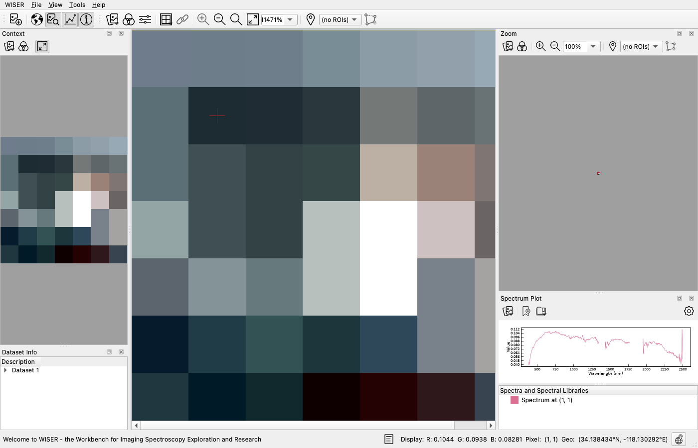
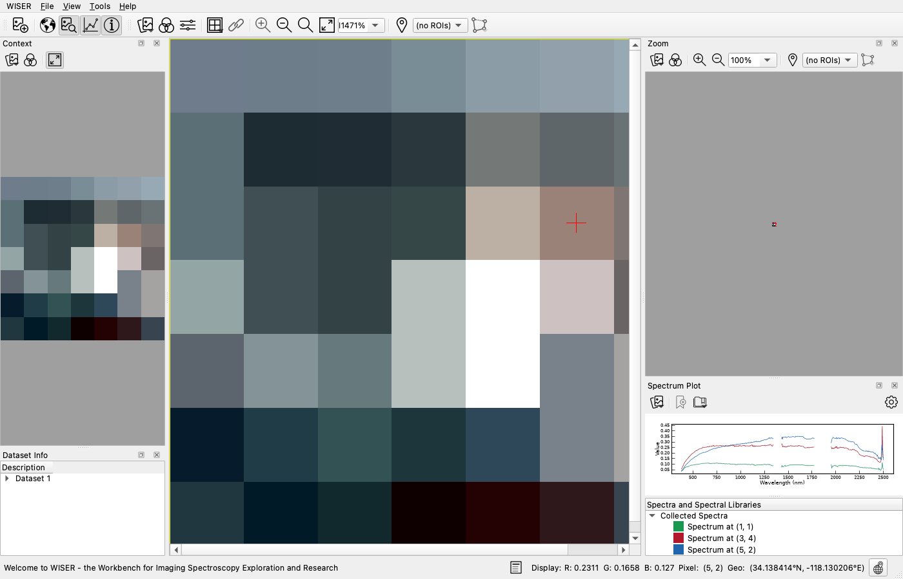

2. Reading Spectra#
Goal: get a spectrum out of an image, collect several, compare them, and bring in reference spectra from a library.
Data: src/test_utils/test_datasets/caltech_425_7_7_nm.hdr — a 425-band
AVIRIS cube covering 377–2500 nm, cropped to 7 × 7 pixels. Ships with the WISER
source.
Note
Seven by seven pixels is not a typo. This cube is a unit-test fixture, kept tiny so it can live in the repository. What matters here is its spectral depth: each of those 49 pixels carries a full 425-band AVIRIS spectrum. Zoom to fit and every pixel fills a large block of screen, which makes it obvious which one you clicked.
Reference: Spectra and Spectral Libraries.
Step 1 — Click a pixel, get a spectrum#
Choose File ▸ Open… and select
caltech_425_7_7_nm.hdr.If the Spectrum Plot and Zoom panes are not showing, click their pane toggles on the Main Toolbar. Then click Zoom to fit. At 7 × 7 pixels the scene fills the window and each pixel becomes a large block.
Click any pixel in the main window.
A red crosshair marks the pixel you clicked, and its spectrum is drawn in the Spectrum Plot pane.


The status bar gives the display value per channel, the pixel coordinate, such
as Pixel: (5, 2), and the ground position, such as Geo: (34.138414°N, -118.130206°E).
The x-axis is in nanometers because the header supplies wavelengths. Where a dataset has none, WISER plots band number instead.
Note
The gaps in the spectrum are real. Bands near 1400 nm and 1900 nm sit inside strong atmospheric water-vapor absorptions and carry no usable surface signal. They are flagged bad in the header and left out of the line. The transform, classification and detection tools (PCA, MNF, K-means, SAM, SFF, MTMF and linear unmixing) drop flagged bands too.
Step 2 — Collect spectra so you can compare them#
A clicked spectrum is the active spectrum, and it is replaced the moment you click elsewhere. To keep one, click Collect spectrum on the Spectrum Plot pane’s own toolbar. The spectrum is added to the list below the plot and stays there when you click a new pixel.
Collect three pixels: a bright one, a dark one, and one in between. WISER picks a random color for each. To choose your own, right-click its name in the list below the plot, choose Edit…, and set Plot color:.

From the list below the plot:
Untick the checkbox beside a spectrum to hide it without deleting it.
Right-click a spectrum ▸ Edit… opens the Spectrum Information dialog. Set Spectrum name: and Plot color: here. The dialog also shows the pixel Location: it came from, and an Average mode: of Mean or Median with an Area-average size, which is the same averaging Step 3 describes.
Right-click a spectrum ▸ Save to file… writes it out as text.
Right-click a spectrum ▸ Discard… removes one spectrum. Right-click the Collected Spectra group name and choose Discard all… to clear the list.
Then keep clicking. Work across the scene pixel by pixel and watch the active spectrum redraw each time.
Interpretation
This 7 × 7 fixture holds 49 pixels, and every one of them carries 425 numbers. Each click reads a different measurement out of a different patch of ground.
Two pixels that look almost identical on screen can have visibly different spectra, because the display is showing you three of the 425 bands and the plot is showing you all of them. That gap between what the image shows and what the data holds is the reason for the rest of these tutorials.
Step 3 — Tune the plot#
Click Configure on the Spectrum Plot toolbar, or right-click anywhere in the plot and choose Configure plot…. Both open the Spectrum Plot Configuration dialog. Three settings matter for this tutorial:
Under X Axis, tick Manually specify X axis range and set Minimum value: and Maximum value: to zoom in on one absorption feature.
Under New Spectra, Default area-average size and Default average mode: average an n × n box around each click, by mean or median.
Under Plot, pick a Legend: position before you export a figure. It defaults to No legend.
The rest of the dialog (fonts, titles, tick marks, and how the selected point is drawn) is listed in Spectra and Spectral Libraries.
Interpretation
The area-average setting changes the spectrum you extract, not the cube. A single AVIRIS pixel is noisy, and a 3 × 3 median is much steadier, but it mixes in the eight neighboring pixels, so on a boundary you get a blend of two surfaces rather than a cleaner version of one. Use it in the middle of a uniform area, not at an edge.
To save the figure, right-click the plot and choose Export plot to image…, then pick a format (EPS, PDF, PNG or SVG) and a resolution (72, 100 or 300 dpi).
Step 4 — Bring in reference spectra#
Measured spectra are easier to interpret next to known ones. Click Load or import spectra on the Spectrum Plot toolbar. It offers two options:
Load spectral library… — an ENVI spectral library (
.sli+.hdr)Import ASCII spectral data… — a text file; WISER asks which column holds wavelength and which the values, and what the delimiter is
Try the library that ships with the source:
src/test_utils/test_spectra/usgs_resampHeadwallSWIR.hdr
That is 481 USGS mineral spectra, including alunite, jarosite, kaolinite and calcite, resampled to a 285-band Headwall short-wave infrared (SWIR) sensor. Tutorial 7 uses it.


Imported libraries are listed but not drawn, because a few hundred lines at once would be unreadable. Right-click a spectrum name and choose Show spectrum to draw just that one. Right-click the library name and choose Show all spectra or Hide all spectra to draw or hide all of it.
Note
A library resampled to one sensor’s bands will not line up with another’s. The detection tools (Tutorial 7) handle this for you: they interpolate each reference onto the target’s wavelength grid before comparing. For eyeballing spectra, mismatched sampling is fine.
Step 5 — Flatten the continuum#
Absorption features are easier to compare once the broad slope is divided out. Right-click a spectrum’s name in the list below the plot and choose:
Continuum Removal: Single Spectrum — that spectrum
Continuum Removal: Collected Spectra — everything you have collected
WISER fits the upper convex hull (a line of straight segments stretched across
the tops of the spectrum) and divides by it. For each spectrum it processes,
WISER adds two collected spectra: <name> Continuum Removed and the hull,
Convex Hull <name>. Overall brightness and slope disappear; the depth and
shape of each absorption band remain. That is what makes a shadowed and a
sunlit pixel of the same material comparable, and it is the step
Spectral Feature Fitting performs
internally.
The same operation runs on a whole cube: right-click the image and choose Continuum Removal: Image.
What you can now do#
Pull a spectrum from any pixel and read its coordinates
Collect, color and compare several spectra
Average over a neighborhood to suppress noise
Load a mineral library and continuum-remove for comparison
Next: Tutorial 3 — Regions of Interest — one pixel is noisy; a region gives you a class signature.